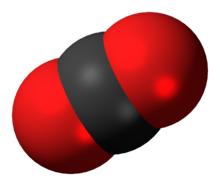

Koldioxid
| Koldioxid | |
|---|---|
| Kemisk formel | CO2 |
| Molmassa | 44 g/mol |
| Densitet | 1,98 g/dm3 |
| Kokpunkt | -56,6 °C |
| Smältpunkt | -78,5 °C |
Koldioxid
Koldioxid (latinskt namn: Dioxidum carbonis) är en gas, som är färglös i normala temperaturer.
För närvarande utgör den omkring 415 ppm av atmosfärens volym.
Halten i atmosfären ökar i stigande takt och ökningen ligger för närvarande på strax över två ppm per år i snitt.
Koldioxid har en signifikant biologisk betydelse, spelar en viktig roll för jordens klimat och har många industriella tillämpningar.
Med naovturvetenskapligt språkbruk är kolsyra vattenlösningen av koldioxid (se kolsyra).
Men bland annat i livsmedelssammanhang och i vardagligt tal kallar man även ofta gasen koldioxid för kolsyra.
Bubblorna i öl och läskedrycker är gasformig koldioxid löst i vätskan.
Vad finns på sidan?
Miljö
Koldioxid är en gas som bildas vid fullständig förbränning av kolföreningar i
syre men de stora tillflöden av atmosfäriskt koldioxid bidrar naturen själv med.
Vid förbränning av biomassa ökar inte halten av koldioxid i atmosfären,
så länge biomassan tillåts växa upp igen och åter absorbera samma mängd koldioxid.
Koldioxid har en uppehållstid om ca 5 år innan den tas upp av land och hav.
Vid förbränning av fossila bränslen som kol, petroleum, naturgas, oljeskiffer,
tjärsand och torv återförs kol som varit utanför kretsloppet väldigt länge.
Såvida inte varje gram av återfört kol binds i ny biomassa,
så ökar koldioxidhalten i atmosfären. Koldioxid tas upp i vatten, speciellt i världshaven,
vars pH är över 7,0. Då regn faller över områden i världen där det finns kalksten och
kalkhaltig lera binds också koldioxid. Kalciumkarbonat, CaCO3, reagerar med koldioxid, bundet i
vatten, s.k. kolsyra, H2CO3. Kalciumvätekarbonat, Ca (HCO3)2 bildas i stället.
Denna ökning av koldioxiden, som industrialismen och dess storskaliga utnyttjande av
fossila bränslen medfört, leder till en ökad växthuseffekt vilket bidrar till global uppvärmning.
Dessutom leder utsläppen till havsförsurning, vilket kan utvecklas till ett allvarligt hot mot havens ekosystem.
Hälsa
Koldioxid är tung, kvävande och mycket svår att få att reagera, även färglös. Vid inandning i höga koncentrationer får man en sur smak i munnen och en stickande känsla i hals och svalg eftersom gasen löser sig i saliven och bildar kolsyra. Molekylen är rak och består av en kolatom omgiven av två syreatomer. Vid låg temperatur övergår gasen till fast tillstånd, så kallad kolsyresnö eller torris. Vid normalt tryck sublimerar kolsyresnön till gasform. Sublimationspunkten för koldioxid vid normalt tryck ligger vid –78 °C. Koldioxid är en giftfri gas, nödvändig för biosfären och för syreomvandlingen, vid halter lägre än 200 ppm får växtligheten svårt att överleva. Gasen i flytande form kan endast förekomma vid högt tryck; trippelpunkten ligger vid 5,1 atmosfärer och vid 25 °C måste trycket ökas till 67 atm för att gasformig koldioxid ska övergå i flytande form.